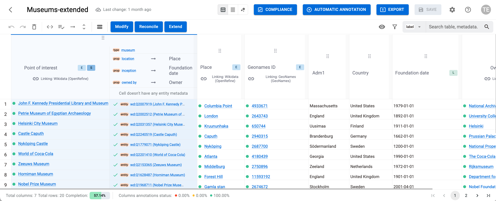

Powered by

| Project Links |
|---|
| Software GitHub Repository --> SemT-X software <https://github.com/I2Tunimib> |
SemT-X is a modular framework designed to support the semantic description, enrichment, alignment, and interoperability of tabular data. It also enables users to invoke compliance services to verify and validate data, and to receive guidance on enforcing any prescriptions required to ensure compliance.
SemT-X guides users in the design of enrichment pipelines and in verifying their compliance by supporting the discovery of available enrichment and compliance services, the testing of their capabilities, and their use within the specific domain of the data to be enriched. Once the design is completed, the resulting pipeline can be exported as Python scripts to ensure the replicability of the intended workflow. These Python scripts can be executed interactively as notebooks, run as batch tools, or used as a basis for generating cloud-based pipelines. The most suitable execution mode depends on user needs and on the volume of data to be processed; cloud-based pipelines are typically appropriate only when handling very large datasets.
Comprehensive documentation is available at:
https://i2tunimib.github.io/I2T-docs/

SemT-X Architecture
The framework adopts a service-based architecture, making it easily extensible to address specific technical and business requirements.
A central component of the SemT-X architecture is the back-end (SemTX-backend), which serves both as an advanced gateway to data enrichment services (modification, reconciliation, and extension) and as a manager of the datasets and tables involved (including model definition and storage of enriched data).
Access to the backend is provided through a Web API, which is used by a graphical front-end (SemT-UI) implemented as a web application, and by a Python library (SemT-Py) that enables programmatic access — for example, from a Jupyter Notebook.
SemT-X is designed so that new external services can be easily integrated by developers, following the framework’s structure and conventions.
Each service within the framework is organized into three main components:
📦serviceId
┣ 📜index.js
┣ 📜requestTransformer.js
┗ 📜responseTransformer.jsThe index.js file defines the main properties and configuration parameters of the service to be integrated.
The requestTransformer.js component is responsible for adapting the data received from the front-end to the format required by the target service API.
Conversely, the responseTransformer.js component performs the reverse operation, ensuring that the data returned by the external service is converted into the structure expected by the front-end.
Comprehensive documentation describing the implementation details and integration procedures is available at:
https://i2tunimib.github.io/I2T-docs/
SemT-X features are accessible interactively via a graphical user interface (SemT-UI) running in the browser, and programmatically via a Python library (SemT-Py).

Graphical User Interface — SemT-UI

Jupyter Notebook using the Python library — SemT-Py
| Organisation (s) | License Nature | License |
|---|---|---|
| University of Milan-Bicocca | Open Source | Apache 2.0 |
| What (types) | How(Process) | Values |
|---|---|---|
| Usability: ease of learning and overall user satisfaction when using the tool | Assessment via the User Experience Questionnaire (UEQ) | Exceed the standard evaluation thresholds defined by the UEQ |
SemT-X delivers a comprehensive tool for the semantic enrichment of tabular data, combining automated processes with human expertise.
The main interface of the framework is the SemT-UI front-end, which provides:
SemT-X installation requires the installation of SemT-UI and SemT-backend. Optional componentes are SemT-Py, the Python library, and SemT-parser, the pipeline compiler.
Updated installation instructions are available at the respective repositories.
Refer to SemT-X online documentation: https://i2tunimib.github.io/I2T-docs/resources
n/a
n/a
n/a